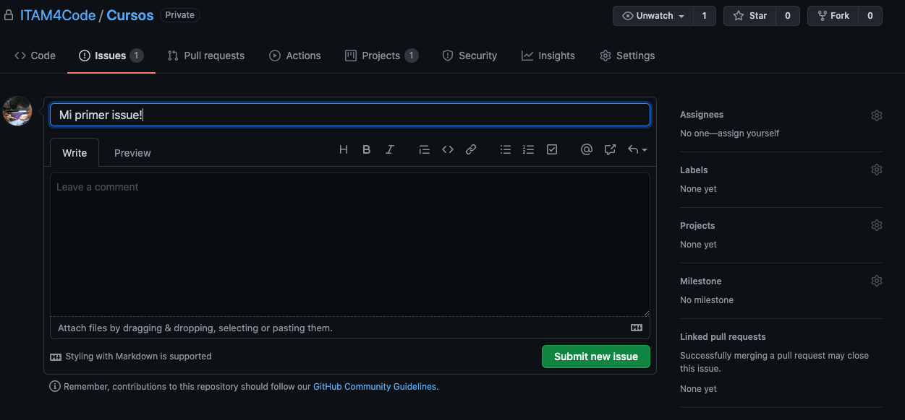

Issues
Every non-trivial program contains at least one bug
--Murphy computer laws
Cuando se comparte software, es casi una garantía que la comunidad que lo usa va a encontrar bugs (o errores) en el funcionamiento del código. Lo mejor que se puede hacer en estos casos es informar a quien se encarga de dar mantenimiento al proyecto, pero hacerlo por ejemplo por emails individuales es muy ineficiente. ¿Qué pasa si yo encuentro un bug que ya fue descubierto hace semanas y lo reporto? Estaré duplicando información y haciendo más difícil arreglarlo.
Para mantener toda la información organizada para quien trabaje en el proyecto y las personas que lo usan hacemos issues en el repo. Los issues sirven como reportes con toda la información que podría ayudar a resolver el problema, y además también son útiles para los usuarios ya que pueden buscar ahí un problema que hayan tenido y quizás ahí esté la solución1. Los issues se pueden crear por muchas razones. Por ejemplo para reportar errores, comportamiento inesperado, o incluso para pedir que se agreguen cosas que nos gustaría usar. Por ahora nos enfocaremos en reportar errores.
Pro tip: Si estás usando software open source y te encuentras con un bug es muy buena idea empezar a buscar soluciones en la pestaña de bugs en el repo que tiene el código fuente. Es posible que encuentres la solución, y si no es así, podrás crear un reporte. Eso también es ayudar a la comunidad!
¿Cómo creo un issue?
Para crear un issue pues dar click a la pestaña issues en la página principal del repo. Ahí verás una pantalla como la siguiente:

Si das click en el botón verde enorme que dice "New Issue" podrás ver la pantalla siguiente y ahí empezar a llenar un reporte2.
Algunos repos te mostrarán una pequeña página con templates de issues. Si los usas y llenas la información que te piden podrás ayudar aún mejor a que se resuelva el problema.

El la parte izquierda podrás elegir un título y llenar más información. Trata de elegir un título corto pero ilustrativo. Abajo del título puedes hacer comentarios más extensos, y en muchas ocasiones se pide que se de mucha información. Puedes incorporar código, listas, links, y todo lo que permite markdown. Incluso puedes hacer referencia a otros issues por su número de issue, mencionar personas o equipos con @, o hace referencia a commit con su número de hash3.
Un número de hash es un código alfanumérico que identifica únicamente a un commit específico. Qué es un commit y qué es un hash se discuten con más claridad en las notas de git. Por ahora basta con pensar en un commit como una versión específica del código.
En la parte derecha de la pantalla vemos las mismas opciones que las discutidas en la sección sobre pull requests. Salvo que ahora estamos ligando issues a pull request y no al revés.
¿Cómo marco un issue como resuelto?
En esencia hay dos maneras de resolver un issue:
- Cerrarlo mediante un pull request
- Cerrarlo manualmente
La primera opción es sencilla conceptualmente. Si el issue actual
fue mencionado en un pull request, y ese recibe aprobación de
merge entonces el issue se cerrará automáticamente. Esto también
se puede hacer haciendo el mensaje de commit algo del estilo
closes o fixes seguido de #n donde n es el número de issue
que se puede ver al lado de su título en la página de issues. Cada
issue y pull request se numera en orden sucesivo a medida que se
crea.
Para cerrar un issue manualmente el proceso es muy simple. Al final de todos los comentarios hay un botón rojo que dice algo como "close issue". Esto solo se puede hacer si tienes permisos de escritura sobre el repo. Es decir, si formas parte del equipo al cual le pertenece o si tienes invitación para colaborar.